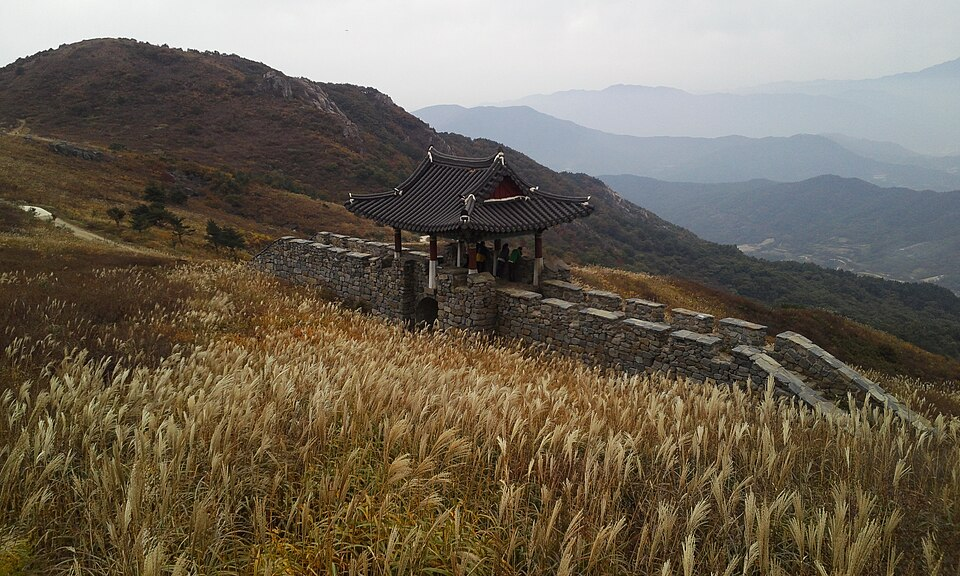

경남 합천 검정고시 — 바쁜 철과 한가한 철, 공부량 나누기

하는 일에 따라 1년이 고르게 흘러가지 않는 분들이 있습니다. 어떤 철에는 하루가 통째로 없고, 어떤 철에는 시간이 남습니다. 이런 분들이 1년 내내 똑같은 계획을 세우면 바쁜 철에 반드시 무너집니다. 경남 합천(합천군) 검정고시를 이런 조건에서 준비하실 때 1년을 어떻게 나누면 되는지 정리했습니다.
같은 분량을 1년 내내 지키는 계획은 실패합니다
계획표를 짤 때 대개 평균적인 하루를 기준으로 잡습니다. 그런데 일이 몰리는 몇 주가 오면 그 계획은 바로 깨지고, 한 번 깨진 계획표는 대개 다시 안 펴집니다. 문제는 의지가 아니라 처음부터 한 가지 분량만 정해 둔 것입니다.
그래서 시작할 때 바쁜 철 분량과 한가한 철 분량을 따로 정해 두시길 권합니다. 두 개를 미리 정해 두면 바쁜 철에 분량을 줄이는 게 포기가 아니라 계획대로 하는 일이 됩니다. 이 차이가 1년을 버티느냐 마느냐를 가릅니다.
바쁜 철에는 끊기지 않을 최소량만
일이 몰리는 기간에는 진도를 욕심내지 않습니다. 이때의 목표는 손을 완전히 놓지 않는 것 하나입니다. 하루 20분, 단어 열 개, 어제 본 쪽 다시 읽기 정도면 충분합니다.
적어 보이지만 효과는 분명합니다. 한 달을 통째로 쉬면 다시 시작할 때 앞 내용을 되짚느라 2~3주가 그냥 날아갑니다. 최소량을 유지한 사람은 한가해지는 날 바로 이어서 갈 수 있습니다. 바쁜 철에 아낀 시간은 대개 복구하는 데 다시 들어갑니다.
한가한 철에 새 과목을 시작합니다
반대로 시간이 나는 철에는 새로 시작하는 과목을 배치합니다. 처음 손대는 과목은 틀을 잡는 데 집중해서 앉아 있어야 하는데, 이게 바쁜 철에는 거의 불가능합니다.
수학이나 영어처럼 앞을 모르면 뒤가 안 되는 과목을 이때 올려 두고, 사회·한국사처럼 짧게 끊어 봐도 되는 과목은 바쁜 철로 미뤄 두면 1년이 훨씬 수월하게 돌아갑니다. 검정고시는 전 과목 평균 60점이면 합격이라, 모든 과목을 같은 속도로 끌고 갈 필요가 없습니다.
오가는 시간이 아까우면 화상으로
군 지역에서는 수업 한 번에 오가는 시간이 수업 시간보다 길어지는 경우가 많습니다. 이게 쌓이면 바쁜 철에 가장 먼저 빠지는 게 수업이 됩니다.
그래서 화상(줌) 수업을 같이 쓰시는 분들이 많습니다. 바쁜 철에는 짧게 화상으로만 이어 가고, 한가한 철에는 방문 수업으로 길게 보는 식으로 섞어도 됩니다. 중요한 건 수업 요일이 끊기지 않는 것입니다. 그 요일이 한 주의 기준이 되어 줍니다.
합천에서 이렇게 함께합니다
저희는 1:1 맞춤 과외라 정해진 진도표를 따라가게 하지 않고, 바쁜 철과 한가한 철을 먼저 듣고 계획을 두 벌로 짭니다. 합천읍을 비롯해 삼가면·가야면·초계면·야로면·대병면 등은 방문 수업이 가능하고, 거리가 멀거나 바쁜 철에는 화상(줌) 수업으로 끊김 없이 이어 갑니다.
관련 검색어: 합천검정고시 · 합천검정고시과외 · 합천군검정고시과외 · 경남합천검정고시 · 합천성인과외